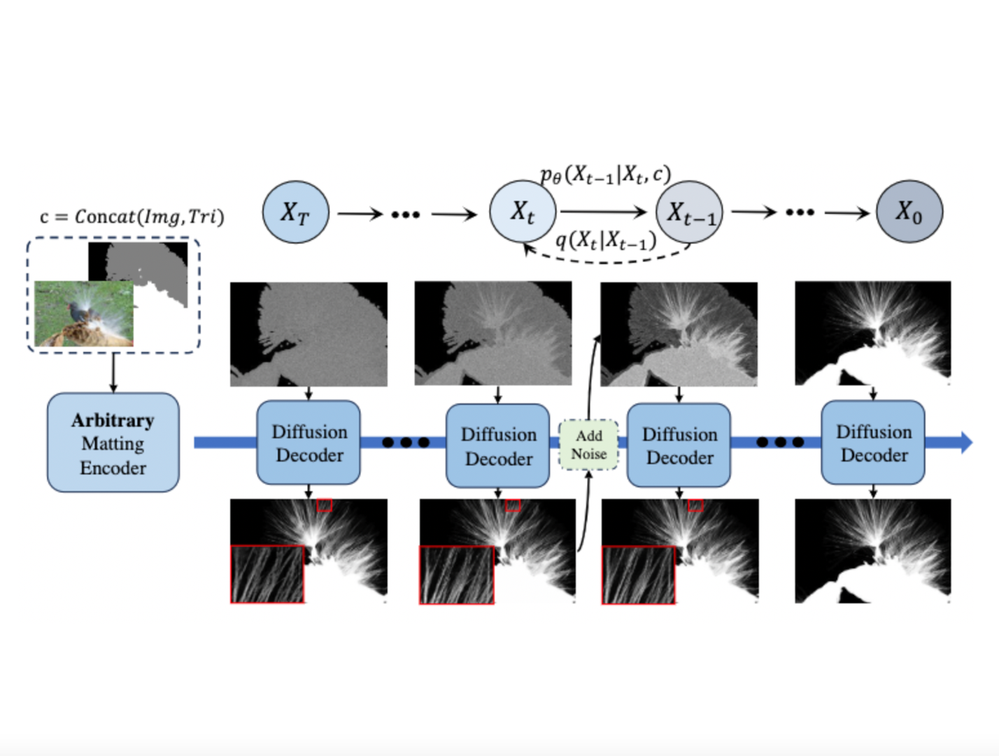
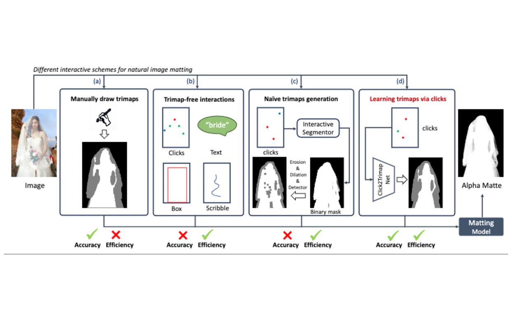

<!DOCTYPE HTML>
<html lang="en">
  <head>
    <meta http-equiv="Content-Type" content="text/html; charset=UTF-8">

    <title>Yihan Hu</title>

    <meta name="author" content="Yihan Hu">
    <meta name="viewport" content="width=device-width, initial-scale=1">
    <link rel="shortcut icon" href="images/favicon/favicon.ico" type="image/x-icon">
    <link rel="stylesheet" type="text/css" href="stylesheet.css">
    
  </head>

  <body>
    <table style="width:100%;max-width:800px;border:0px;border-spacing:0px;border-collapse:separate;margin-right:auto;margin-left:auto;"><tbody>
      <tr style="padding:0px">
        <td style="padding:0px">
          <table style="width:100%;border:0px;border-spacing:0px;border-collapse:separate;margin-right:auto;margin-left:auto;"><tbody>
            <tr style="padding:0px">
              <td style="padding:2.5%;width:63%;vertical-align:middle">
                <p class="name" style="text-align: center;">
                  Yihan Hu
                </p>
                <p>I'm a second-year Master student at <a href="https://www.bjtu.edu.cn//">Beijing Jiao Tong University</a>, fortunately supervised by Prof. <a href="https://scholar.google.com/citations?hl=zh-CN&user=qL9Csv0AAAAJ">Yunchao Wei</a>.
                </p>
                <p>
                   I received my Bachelor degree from Beijing Jiao Tong University in 2022, with GPA: 3.81/4.0 and won Academic Excellence Scholarship for three times.
                </p>
		<p>
                   My current research mainly focuses on fine-grained perception, high-resolution and efficient matting. Feel free to shoot an email to discuss with me if you have any idea in these areas.
                </p>
                <p style="text-align:center">
                  <a href="mailto:18281128hyh@gmail.com">Email</a> &nbsp;/&nbsp;
                  <a href="data/Yihan-CV.pdf">CV</a> &nbsp;/&nbsp;
                  <a href="https://scholar.google.com/citations?view_op=list_works&hl=zh-CN&user=UP2IgWIAAAAJ">Scholar</a> &nbsp;/&nbsp;
                  <a href="https://github.com/YihanHu-2022/">Github</a>
                </p>
              </td>
              <td style="padding:2.5%;width:40%;max-width:40%">
                <a href="figures/YihanHu.jpg"></a>
              </td>
            </tr>
          </tbody></table>

          <!-- <table width="100%" align="center" border="0" cellspacing="0" cellpadding="20"><tbody>
            <tr>
              <td>
                <h2>News</h2>
                <ul>
                  <li> <b>[Dec. 2023]</b> We release DiffMatte </li> -->
                  <!-- <a onclick="return display('old_news');"> ---- show more ----</a>
                  <div id="old_news" style>
                    <li> hahaha nihao </li>
                  </div> -->
                <!-- </ul>
              </td>
            </tr>
          </tbody></table>
          <table width="100%" align="center" border="0" cellpadding="20"><tbody> -->

          <table width="100%" align="center" border="0" cellspacing="0" cellpadding="20"><tbody>
            <tr>
              <td>
                <h2>Experiences</h2>
                <ul>
                  <p> <li> <b>04/2024 - &#20;&#20;&#20;now &#20;&#20;&#20;</b>     Research Intern at <a href="https://mtlab.meitu.com/">Meitu AI Lab</a> </li> </p>
                  <p> <li> <b>08/2021 - 12/2023&#20;</b> Research Intern at <a href="https://www.picsart.ai/">Picsart AI</a> </li> </p>
                </ul>
              </td>
            </tr>
          </tbody></table>
          <table width="100%" align="center" border="0" cellpadding="20"><tbody>

            <table width="100%" align="center" border="0" cellspacing="0" cellpadding="20"><tbody>
              <tr>
                <td>
                  <h2>Academic Services</h2>
                  <h3>Journal Review</h3>
                  <ul>
                    <p> <li> IEEE Transactions on Circuits and Systems for Video Technology (<b>TCSVT</b>) </li> </p>
                    <p> <li> Image and Vision Computing (<b>IMAVIS</b>)</li> </p>
                  </ul>
                </td>
              </tr>
            </tbody></table>
            <table width="100%" align="center" border="0" cellpadding="20"><tbody>

          <table style="width:100%;border:0px;border-spacing:0px;border-collapse:separate;margin-right:auto;margin-left:auto;"><tbody>
              <tr>
              <td style="padding:20px;width:100%;vertical-align:middle">
                <h2>Research</h2>
              </td>
            </tr>
          </tbody></table>
          <table style="width:100%;border:0px;border-spacing:0px;border-collapse:separate;margin-right:auto;margin-left:auto;"><tbody>

            <tr>
              <td style="padding:20px;width:25%;vertical-align:middle">
                
              </td>
              <td width="75%" valign="middle">
                <a href="https://arxiv.org/abs/2312.05915">
                  <span class="papertitle">Diffusion for Natural Image Matting</span>
                </a>
                <br>
                <strong>Yihan Hu</strong>, Yiheng Lin, <a href="https://weiwangtrento.github.io/">Wei Wang</a>, <a href="https://scholar.google.com/citations?user=474TbQYAAAAJ&hl=zh-CN&oi=ao">Yao Zhao</a>, 
                <a href="https://weiyc.github.io/">Yunchao Wei</a>, <a href="https://www.cc.gatech.edu/people/humphrey-shi">Humphrey Shi</a> 
                <br>
                <em>Arxiv Preprint</em>, 2023
                <br>
                <a href="https://arxiv.org/pdf/2312.05915">pdf</a>
                /
                <a href="https://yihanhu-2022.github.io/DiffMatte/">project page</a>
                /
                <a href="https://github.com/YihanHu-2022/DiffMatte">code</a>
                <p></p>
                <p>This work presents DiffMatte, a matting method with diffusion process, which shows a iterative paradigm for alpha matte refinement.
                </p>
              </td>
            </tr>

            <tr>
              <td style="padding:20px;width:25%;vertical-align:middle">
                
              </td>
              <td width="75%" valign="middle">
                <a href="https://arxiv.org/abs/2312.05915">
                  <span class="papertitle">Diffusion for Natural Image Matting</span>
                </a>
                <br>
                Chenyi Zhang, <strong>Yihan Hu</strong>, <a href="https://weiwangtrento.github.io/">Henghui Ding</a>, <a href="https://scholar.google.com/citations?user=474TbQYAAAAJ&hl=zh-CN&oi=ao">Yao Zhao</a>, 
                <a href="https://weiyc.github.io/">Yunchao Wei</a>, <a href="https://www.cc.gatech.edu/people/humphrey-shi">Humphrey Shi</a> 
                <br>
                <em>Arxiv Preprint</em>, 2024
                <br>
                <a href="https://arxiv.org/pdf/2404.00335">pdf</a>
                /
                <a href="https://github.com/YihanHu-2022/Click2Trimap">code</a>
                <p></p>
                <p>We presents an efficient and user-friendly trimap generation method via click interaction, named Click2Trimap, significantly improve the usability of existing image matting methods.
                </p>
              </td>
            </tr>

      </tbody></table>

  </body>
</html>


    <!-- <tr onmouseout="cat3d_stop()" onmouseover="cat3d_start()" bgcolor="#ffffd0">
      <td style="padding:20px;width:25%;vertical-align:middle">
        <div class="one">
          <div class="two" id='cat3d_image'><video  width=100% height=100% muted autoplay loop>
          <source src="images/cat3d.mp4" type="video/mp4">
          Your browser does not support the video tag.
          </video></div>
          
        </div>
        <script type="text/javascript">
          function cat3d_start() {
            document.getElementById('cat3d_image').style.opacity = "1";
          }

          function cat3d_stop() {
            document.getElementById('cat3d_image').style.opacity = "0";
          }
          cat3d_stop()
        </script>
      </td>
      <td style="padding:20px;width:75%;vertical-align:middle">
        <a href="https://cat3d.github.io/">
			<span class="papertitle">CAT3D: Create Anything in 3D with Multi-View Diffusion Models </span>
        </a>
        <br>
				<a href="https://ruiqigao.github.io/">Ruiqi Gao</a>*,
        <a href="https://holynski.org/">Aleksander Holynski</a>*, 
        <a href="https://henzler.github.io/">Philipp Henzler</a>,
        <a href="https://github.com/ArthurBrussee">Arthur Brussee</a>, 
				<a href="http://ricardomartinbrualla.com/">Ricardo Martin Brualla</a>, 
        <a href="https://pratulsrinivasan.github.io/">Pratul P. Srinivasan</a>,
				<strong>Jonathan T. Barron</strong>,
        <a href="https://poolio.github.io/">Ben Poole</a>*

        <br>
        <em>arXiv</em>, 2024
        <br>
        <a href="https://cat3d.github.io/">project page</a>
        /
        <a href="https://arxiv.org/abs/2405.10314">arXiv</a>
        <p></p>
        <p>
				A single model built around diffusion and NeRF that does text-to-3D, image-to-3D, and few-view reconstruction, trains in 1 minute, and renders at 60FPS in a browser.
        </p>
      </td>
    </tr> -->


    <!-- <tr onmouseout="bog_stop()" onmouseover="bog_start()">
      <td style="padding:20px;width:25%;vertical-align:middle">
        <div class="one">
          <div class="two" id='bog_image'><video  width=100% muted autoplay loop>
          <source src="images/bog.jpg" type="video/mp4">
          Your browser does not support the video tag.
          </video></div>
          
        </div>
        <script type="text/javascript">
          function bog_start() {
            document.getElementById('bog_image').style.opacity = "1";
          }

          function bog_stop() {
            document.getElementById('bog_image').style.opacity = "0";
          }
          bog_stop()
        </script>
      </td>
      <td style="padding:20px;width:75%;vertical-align:middle">
        <a href="https://creiser.github.io/binary_opacity_grid/">
          <span class="papertitle">Binary Opacity Grids: Capturing Fine Geometric Detail for Mesh-Based View Synthesis
</span>
        </a>
        <br>
				<a href="https://creiser.github.io/">Christian Reiser</a>,
				<a href="http://stephangarbin.com/">Stephan J. Garbin</a>,
				<a href="https://pratulsrinivasan.github.io/">Pratul Srinivasan</a>,
				<a href="https://dorverbin.github.io/">Dor Verbin</a>,
				<a href="https://szeliski.org/RichardSzeliski.htm">Richard Szeliski</a>,
				<a href="https://bmild.github.io/">Ben Mildenhall</a>,
				<strong>Jonathan T. Barron</strong>,
				<a href="https://phogzone.com/">Peter Hedman</a>*,
				<a href="https://www.cvlibs.net/">Andreas Geiger</a>*		
        <br>
        <em>SIGGRAPH</em>, 2024
        <br>
        <a href="https://creiser.github.io/binary_opacity_grid/">project page</a>
        /
        <a href="https://www.youtube.com/watch?v=2TPUmGRg8bM">video</a>
        /
        <a href="https://arxiv.org/abs/2402.12377">arXiv</a>
        <p></p>
        <p>
        Applying anti-aliasing to a discrete opacity grid lets you render a hard representation into a soft image, and this enables highly-detailed mesh recovery.
        </p>
      </td>
    </tr>

    <tr onmouseout="smerf_stop()" onmouseover="smerf_start()">
      <td style="padding:20px;width:25%;vertical-align:middle">
        <div class="one">
          <div class="two" id='smerf_image'><video  width=100% muted autoplay loop>
          <source src="images/smerf.mp4" type="video/mp4">
          Your browser does not support the video tag.
          </video></div>
          
        </div>
        <script type="text/javascript">
          function smerf_start() {
            document.getElementById('smerf_image').style.opacity = "1";
          }

          function smerf_stop() {
            document.getElementById('smerf_image').style.opacity = "0";
          }
          smerf_stop()
        </script>
      </td>
      <td style="padding:20px;width:75%;vertical-align:middle">
        <a href="https://smerf-3d.github.io/">
          <span class="papertitle">SMERF: Streamable Memory Efficient Radiance Fields for Real-Time Large-Scene Exploration</span>
        </a>
        <br>
		<a href="http://www.stronglyconvex.com/about.html">Daniel Duckworth*</a>,
		<a href="https://phogzone.com/">Peter Hedman*</a>,
		<a href="https://creiser.github.io/">Christian Reiser</a>,
		<a href="">Peter Zhizhin</a>,
		<a href="">Jean-François Thibert</a>,
        <a href="https://lucic.ai/">Mario Lučić</a>,
        <a href="https://szeliski.org/">Richard Szeliski</a>,
		<strong>Jonathan T. Barron</strong>
        <br>
        <em>SIGGRAPH</em>, 2024
        <br>
        <a href="https://smerf-3d.github.io/">project page</a>
        /
        <a href="https://www.youtube.com/watch?v=zhO8iUBpnCc">video</a>
        /
        <a href="https://arxiv.org/abs/2312.07541">arXiv</a>
        <p></p>
        <p>
        Distilling a Zip-NeRF into a tiled set of MERFs lets you fly through radiance fields on laptops and smartphones at 60 FPS.
        </p>
      </td>
    </tr>		 -->